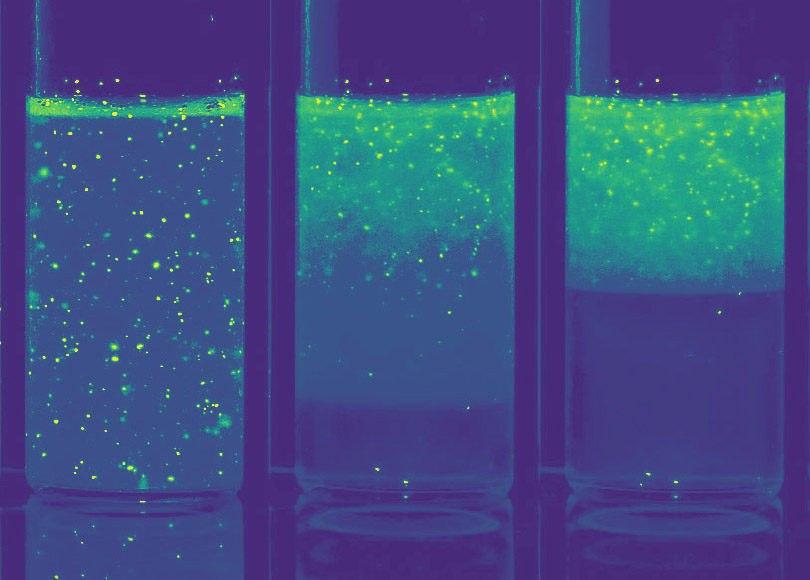

News!
Autumn 2026
Welcome to Masters' students Elisha Cagiuat and Manas Chopade who are working on "Why are Shells and Coral different?" nucleation ...
...and to James Boss and Thehan Bilyard who are exploring further whether "Three is a crowd holds for zebrafish"fish.
Summer 2026
With Malcolm Faers we recieve the Society for Chemical Industry arward for Innovation at the SCI annual awards, held at the House of Lords.
Addressing the hard sphere nucleation discrepancy. Predicting the rate of crystal nucleation is tremendously difficult in general. One might very reasonably imagine that in well-controlled model systems lke colloidal hard spheres would offer a platform where accurate prediction might be made. And yet, since the pioneering work of Stefan Auer and Daan Frenkel 25 years ago, the hard sphere nucleation discrepancy has remained an unsolved problem.
With our collaborators Antoine Castagnède and Frank Smallenburg, we have carried out the first experiments measuring and predicting the free energy of formation of crystal nuclei in any system as far as we are aware. This casts the spolight on earlier experiments as a likely cause for the discrepancy. Congratulations to Lars Kürten for the heroic experiments! Link to journal (open access).
Spring 2026
We are very excited to publish "Observing the mechanism of delayed collapse in colloidal gels: Yielding while becoming stronger" in Proc. Nat. Acad. Sci.with our collaborators Malcolm Faers (Bayer), Rob Jack (Cambridge) and Tannie Liverpool (Bristol). Congratulations to Rui Cheng for her hard work and perseverance with this story. For decades, the mechanism by which colloid gels -- which become strong over time -- and then suddently collapse catastropghically has remained eluisive. Rui developed a new form of imaging which we call multiscale confocal micrpsscoy that reveals the microscopic structure theough an entire macroscopic sample. Link to journal

Paddy Royall starts a Leverhulme Visiting Professorship at the University or Warwick, UK. This is to work with Profs. Livia Bartok-Partay, David Quigley and Matthew Turner to bring higher-order structrural analysis using the Topological Cluster Classification to a new set of systems.
Winter 2025-2026
Congratulations to Dr Lars Kürten who very successfully defended his thesis "Direct Visualisation of Nucleation in Colloidal Model Systems". This is a great thesis, more details are here.
Upcoming events
CECAM meeting "Self-assembly of materials: merging direct experiments with simulations at different resolutions and data science techniques".
March 10th-12th 2027. Jointly organised with Rocio Semino (Sorbonne) and Romain Dupuis (Montpellier). Link to website.